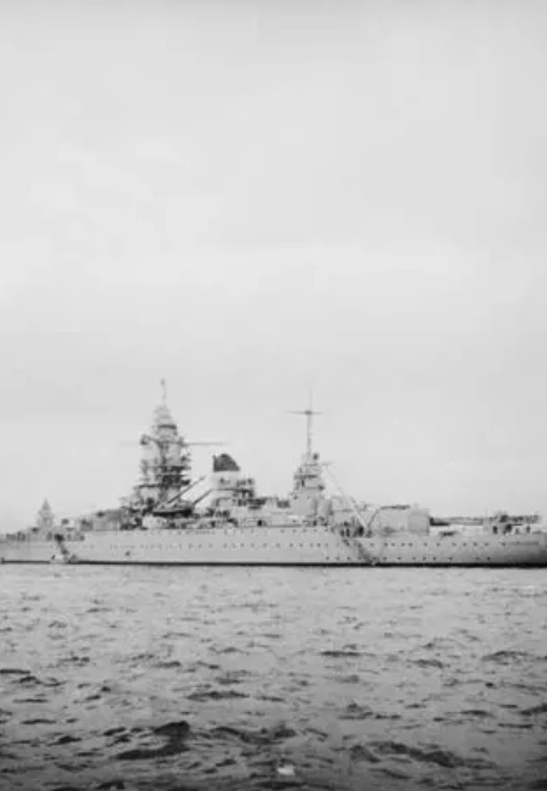
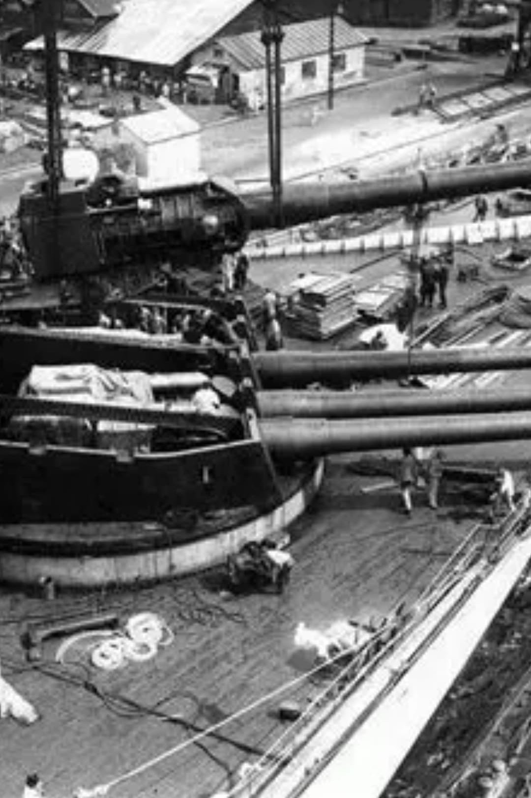
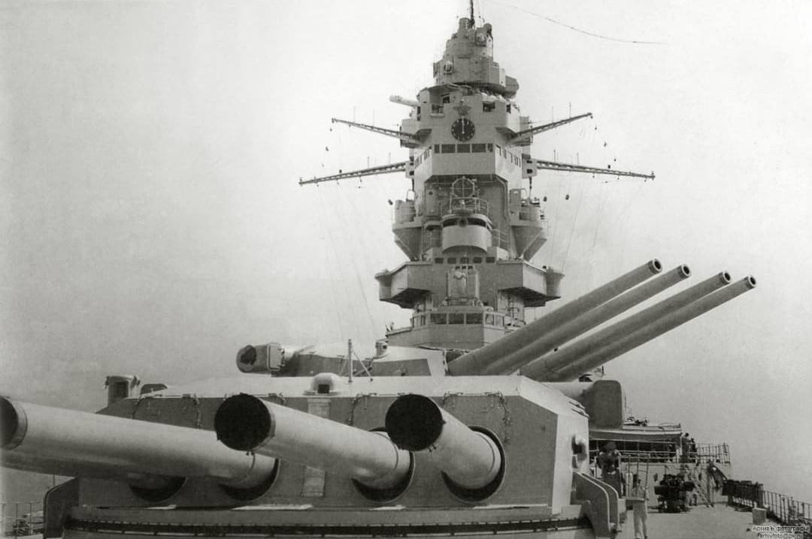
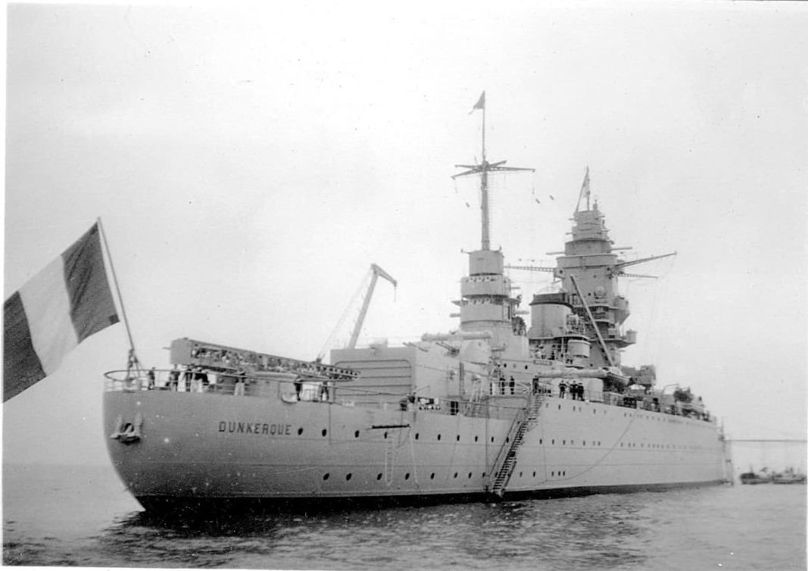
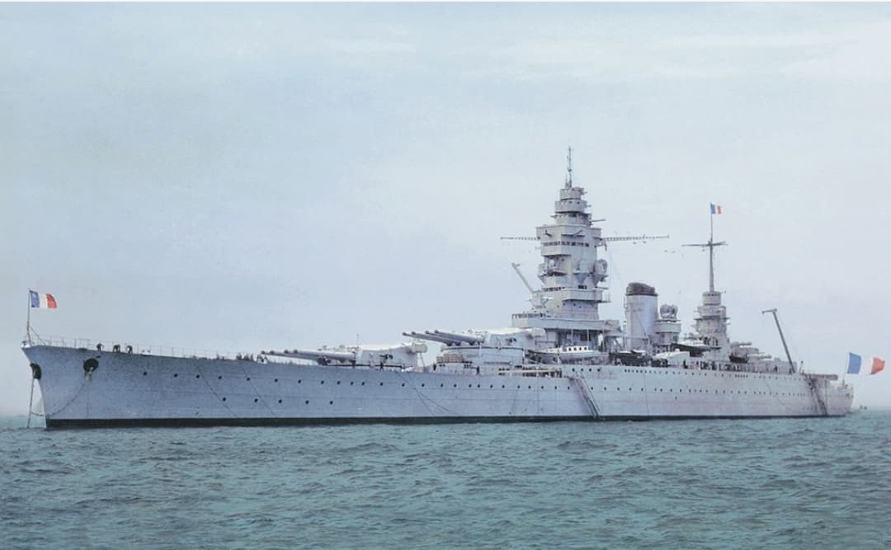

Le Dunkerque est le premier cuirassé rapide de la Marine Nationale. Conçu pour contrer les « cuirassés de poche » allemands, il devient le fleuron de la Force de Raid. Sa silhouette unique — deux tourelles quadruples de 330 mm à l’avant — en fait l’un des navires les plus reconnaissables de la flotte française.

Le Dunkerque est un cuirassé moderne, rapide et puissamment armé. Il introduit une architecture nouvelle dans la Marine Nationale, centrée sur la vitesse et la frappe frontale.

Le Dunkerque concentre toute sa puissance de feu à l’avant : deux tourelles quadruples de 330 mm, soit 8 canons lourds. Cette configuration permet une frappe frontale massive tout en réduisant la surface exposée au tir ennemi.

Le Dunkerque se distingue par sa grande plage avant, sa cheminée unique et sa superstructure compacte. Sa poupe porte fièrement le nom du navire et le pavillon français.


Affecté à la Force de Raid, le Dunkerque participe à la protection des convois et à la chasse aux raiders allemands. Il est gravement touché lors de l’attaque britannique de Mers‑el‑Kébir en juillet 1940, puis sabordé à Toulon le 27 novembre 1942 pour éviter sa capture.